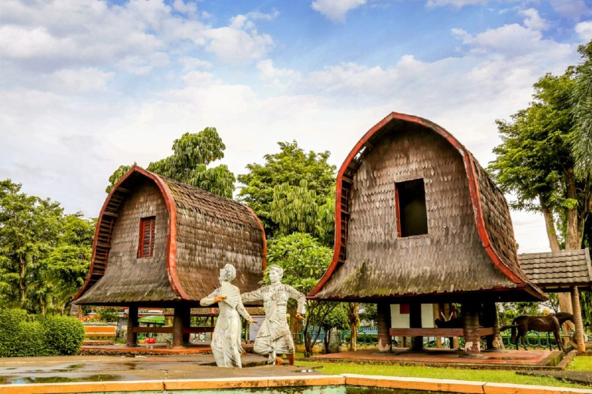
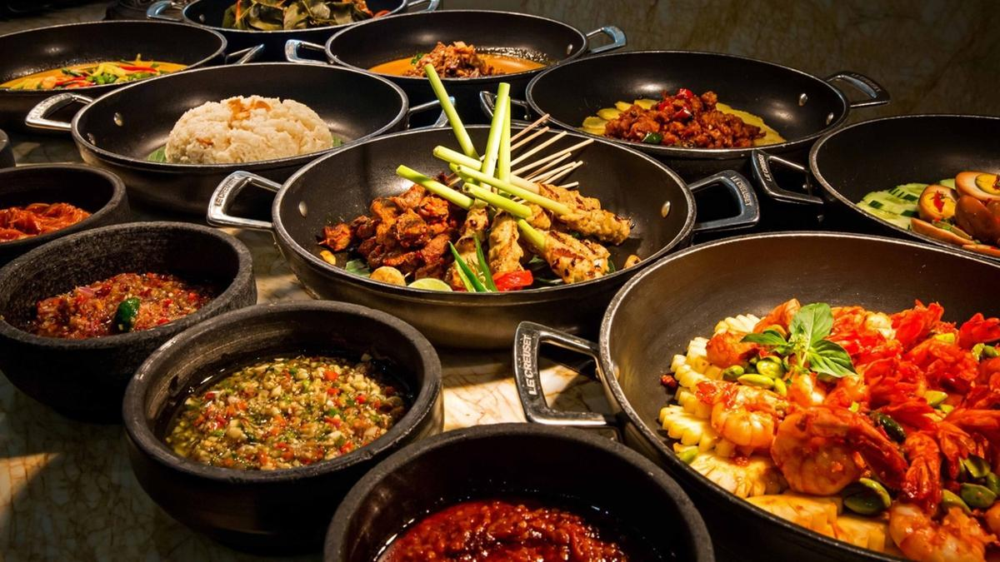

Menjelajahi Keindahan Rumah tradisional dan kuliner khas Indonesia
SelengkapnyaIndonesia memiliki kekayaan budaya yang sangat beragam. Berikut beberapa fakta menarik!
Suku Bangsa
Bahasa Daerah
Rumah Adat
Kuliner Khas

Rumah adat Nusantara dibangun berdasarkan kebutuhan lingkungan, adat, dan filosofi hidup. Setiap rumah memiliki bentuk, bahan, dan fungsi unik.

Kuliner Indonesia terkenal dengan cita rasa kompleks hasil perpaduan rempah-rempah. Setiap daerah memiliki makanan khas yang menggugah selera.
"Web ini keren banget! Informasinya jelas, tampilannya elegan, dan foto-fotonya juga berkualitas."
"Belajar budaya Indonesia jadi lebih menyenangkan. Penjelasan rumah adatnya lengkap!"
"Bagian kulinernya bikin lapar... tampilannya rapi dan informatif. Mantap banget!"